CODING AGENTS AS PIXEL WORLD MODELS
traex/GPT-6.1-Sol · 0046
点击播放 · 原生 RGB 像素
逐轮保存的候选
回放视频、检查图与代码变化。
每份候选均可单独播放。实际图片检查记录在下方工具轨迹中。
候选 01播放与检查图
点击播放 · 原生 RGB 像素
展开代码变化
--- 上一保存版本
+++ 本次保存版本
@@ -0,0 +1,201 @@
+from pathlib import Path
+import numpy as np
+import cv2
+from PIL import Image, ImageDraw
+from scipy.ndimage import gaussian_filter
+import artifact_io
+
+ROOT = Path(__file__).resolve().parent
+W,H=256,144
+S=4
+
+def polygon_mask(points, blur=0):
+ a=Image.new('L',(W*S,H*S))
+ ImageDraw.Draw(a).polygon([(round(x*S),round(y*S)) for x,y in points],fill=255)
+ a=np.asarray(a.resize((W,H),Image.Resampling.LANCZOS),np.float32)/255
+ if blur: a=gaussian_filter(a,blur)
+ return a
+
+def clean_plate(image):
+ yy,xx=np.mgrid[:H,:W].astype(np.float32)
+ dp=[(164,16),(169,18),(182,27),(176,64),(170,70),(154,57),(157,28),(160,21)]
+ dm=polygon_mask(dp)
+ dm=cv2.dilate((dm>.015).astype(np.uint8),np.ones((3,3),np.uint8))
+ tm=((xx>=154)&(xx<=192)&(yy<21)&((image[:,:,2]>image[:,:,0]*1.3)|(image.mean(2)<65))).astype(np.uint8)
+ tm=cv2.dilate(tm,np.ones((3,3),np.uint8))
+ mask=np.maximum(dm,tm)
+ bg=cv2.inpaint(image,mask*255,5,cv2.INPAINT_TELEA).astype(np.float32)
+ theta=.25;c=np.cos(theta);s=np.sin(theta)
+ u=(xx-160.2)*c+(yy-62.1)*s;v=-(xx-160.2)*s+(yy-62.1)*c
+ r=np.sqrt((u/34.5)**2+(v/24.7)**2)
+ ul=(xx-159.7)*c+(yy-69.1)*s;vl=-(xx-159.7)*s+(yy-69.1)*c
+ rl=np.sqrt((ul/28.6)**2+(vl/16.9)**2)
+ liquid=(rl<.98)&(mask==0)&(image[:,:,0]<65)&(image[:,:,2]<25)
+ x=(xx-160)/30;y=(yy-66)/25
+ feat=np.stack([np.ones_like(xx),x,y,x*x,x*y,y*y,x**3,x**2*y,x*y**2,y**3],-1)
+ coef=np.linalg.lstsq(feat[liquid],image[liquid].astype(float),rcond=None)[0]
+ lc=feat@coef
+ known=(r<1.035)&(rl>1.04)&(v<0)&(mask==0)&(image[:,:,2]>image[:,:,0]*1.5)
+ f=np.stack([np.ones_like(xx),r,r*r,r**3,u/34.5,(u/34.5)**2,u*r/34.5],-1)
+ co=np.linalg.lstsq(f[known],image[known].astype(float),rcond=None)[0]
+ wc=f@co
+ blend=np.clip((rl-.99)/.06,0,1)[...,None]
+ col=lc*(1-blend)+wc*blend
+ noise=np.random.default_rng(31).normal(0,.28,(H,W,1))
+ col+=noise
+ inside=(mask>0)&(yy>=35)&(r<1.032)
+ a=np.clip((1.034-r)/.038,0,1)[...,None]
+ bg[inside]=bg[inside]*(1-a[inside])+col[inside]*a[inside]
+ # Smooth only the repaired part, leaving untouched original geometry.
+ sm=gaussian_filter(bg,(.6,.6,0))
+ seam=(mask>0)&(yy>=35)
+ bg[seam]=sm[seam]
+ return np.clip(bg,0,255).astype(np.float32),dm,tm
+
+def extract(image,bg,region,kind):
+ if kind=='white':
+ a=np.clip((image[:,:,2].astype(float)-bg[:,:,2]) / np.maximum(235-bg[:,:,2],35),0,1)
+ a*=region
+ a[a<.03]=0
+ else:
+ # Fine soft focus outline, including the dark gripping pads.
+ points=[(156,-4),(193,-4),(188,3),(185,7),(181,11.7),(177,13.3),(174,12.5),(172.3,15.1),(168,17.5),(163,17.3),(160,15.6),(158,12.9),(157,8)]
+ a=polygon_mask(points,.45)
+ col=np.divide(image.astype(float)-bg*(1-a[:,:,None]),np.maximum(a[:,:,None],.015))
+ col=np.clip(col,0,255)
+ return col*a[:,:,None],a
+
+def transform(rgb,alpha,dx,dy,angle=0,center=(168,43)):
+ mat=cv2.getRotationMatrix2D(center,angle,1)
+ mat[:,2]+=np.array([dx,dy])
+ col=cv2.warpAffine(rgb.astype(np.float32),mat,(W,H),flags=cv2.INTER_CUBIC,borderMode=cv2.BORDER_CONSTANT)
+ a=cv2.warpAffine(alpha.astype(np.float32),mat,(W,H),flags=cv2.INTER_CUBIC,borderMode=cv2.BORDER_CONSTANT)
+ return col,np.clip(a,0,1)
+
+def overlay(bg,col,a):
+ return bg*(1-a[:,:,None])+col
+
+# All liquid movement is an analytic, damped capillary/gravity disturbance.
+def water(bg,t):
+ yy,xx=np.mgrid[:H*S,:W*S].astype(np.float32)
+ xx=(xx+.5)/S-.5;yy=(yy+.5)/S-.5
+ theta=.25;c=np.cos(theta);s=np.sin(theta)
+ ul=(xx-159.7)*c+(yy-69.1)*s
+ vl=-(xx-159.7)*s+(yy-69.1)*c
+ ellipse=(ul/28.6)**2+(vl/16.9)**2
+ clip=np.clip((1.015-ellipse)*28,0,1)
+ # Center of impact, cylindrical water-plane distance corrected for projection.
+ x=xx-168.;y=(yy-69.)/.58
+ dist=np.sqrt(x*x+y*y+.1)
+ a=t-.38
+ if a<0:return bg.copy(),clip
+ amp=1.7*np.exp(-a/1.03)*(1-np.exp(-a*20))
+ phase=.69*dist-16*a
+ envelope=np.exp(-((dist-25*a)/15)**2)
+ z=amp*np.sin(phase)*envelope
+ z+=.45*amp*np.sin(.48*dist-11*a)*np.exp(-dist/48)
+ # Small secondary ripples returned from the ceramic walls.
+ z+=.22*amp*np.sin(.7*(52-dist)-15*a)*np.exp(-((52-dist-25*a)/18)**2)
+ nx=np.gradient(z,axis=1)*S
+ ny=np.gradient(z,axis=0)*S*.58
+ big=cv2.resize(bg,(W*S,H*S),interpolation=cv2.INTER_CUBIC)
+ # Shifts of reflected environmental light on the rippling dark surface.
+ mapx=(xx+.5)*S-.5+nx*S*.26
+ mapy=(yy+.5)*S-.5+ny*S*.3
+ refr=cv2.remap(big,mapx.astype(np.float32),mapy.astype(np.float32),cv2.INTER_CUBIC)
+ lighting=np.clip(-.6*nx-ny, -2,2)
+ shine=np.maximum(lighting-.1,0)**2*8*np.exp(-a*.8)
+ darkness=np.minimum(lighting,0)*5
+ delta=shine[:,:,None]*np.array([1,.78,.60])+darkness[:,:,None]*np.array([.8,.67,.48])
+ rip=refr+delta
+ big=big*(1-clip[:,:,None])+rip*clip[:,:,None]
+ # Short lived bubbling at the insertion point, with no persistent foam.
+ bubble=np.exp(-a*3.8)
+ if a<1.4:
+ for j,(bx,by,br) in enumerate([(162,72,1.1),(171,74,1.25),(176,69,.8),(164,66,.7)]):
+ bx+=(j-1.5)*a*2;by+=a*1.0
+ rr=np.sqrt((xx-bx)**2+((yy-by)/.7)**2)
+ b=np.exp(-((rr-br)/.25)**2)*bubble*.32*clip
+ big=big*(1-b[:,:,None])+np.array([123,100,78])*b[:,:,None]
+ return cv2.resize(np.clip(big,0,255),(W,H),interpolation=cv2.INTER_AREA),clip
+
+def draw_splash(frame,t):
+ age=t-.41
+ if age<0 or age>.65:return frame
+ # A low asymmetric crown and a couple of airborne droplets.
+ strength=np.exp(-((age-.21)/.21)**2)
+ layer=Image.new('RGBA',(W*S,H*S),(0,0,0,0));d=ImageDraw.Draw(layer)
+ def poly(p,col):d.polygon([(int(x*S),int(y*S)) for x,y in p],fill=col)
+ top=69-12*strength
+ # Far side of the crown is a translucent amber sheen.
+ poly([(157.2,69),(158,66-4*strength),(161,66-8*strength),(164,68-5*strength),(166,top),(168,67-7*strength),(172,65-5*strength),(176,67-4*strength),(179,70),(175,73),(168,74),(160,72)],(57,25,9,int(170*strength)))
+ poly([(158,69),(160,64-5*strength),(161.5,63-6*strength),(162,66-3*strength),(166,70),(169,70),(174,65-4*strength),(176,64-3*strength),(176,69),(173,74),(163,73)],(83,40,14,int(175*strength)))
+ # Thin specular contours, not opaque white foam.
+ for pts,alpha in [([(158,69),(160,64-5*strength),(161.5,63-6*strength)],125), ([(172,70),(174,65-4*strength),(176,64-3*strength)],115), ([(162,72),(167,74),(172,73)],90)]:
+ d.line([(int(x*S),int(y*S)) for x,y in pts],fill=(194,164,118,int(alpha*strength)),width=2)
+ # Ballistic droplets travel only briefly and remain close to the cup.
+ for j,(vx,vy,r) in enumerate([(-20,-54,.63),(15,-64,.68),(25,-48,.48),(-7,-78,.50)]):
+ tt=age
+ px=168+vx*tt;py=69+vy*tt+100*tt*tt
+ if py<72:
+ ry=r*(1+abs(vy+200*tt)*.013)
+ d.ellipse(((px-r)*S,(py-ry)*S,(px+r)*S,(py+ry)*S),fill=(63,32,14,220))
+ d.ellipse(((px-r*.6)*S,(py-ry*.65)*S,px*S,(py-ry*.2)*S),fill=(182,161,127,155))
+ lay=np.asarray(layer,dtype=np.float32)
+ lay=gaussian_filter(lay,(1.05,1.05,0))
+ a=lay[:,:,3:4]/255
+ big=cv2.resize(frame,(W*S,H*S),interpolation=cv2.INTER_CUBIC)
+ big=big*(1-a)+lay[:,:,:3]*a
+ return cv2.resize(big,(W,H),interpolation=cv2.INTER_AREA)
+
+def main():
+ original=np.asarray(Image.open(ROOT/'first_frame.png').convert('RGB'))
+ base,dm,tm=clean_plate(original)
+ domino,da=extract(original,base,dm,'white')
+ tool,ta=extract(original,base,tm,'tool')
+ yy,xx=np.mgrid[:H,:W].astype(float)
+ frames=[]
+ for k in range(20):
+ if k<=1:
+ frames.append(original.copy());continue
+ t=k/4
+ frame,waterclip=water(base,t)
+ if k==2:
+ displacement=12.5;angle=-2.0
+ elif k==3:
+ displacement=45;angle=-5.0
+ else: displacement=90;angle=-7
+ if k<4:
+ col,a=transform(domino,da,-.7,displacement,angle)
+ # The dark liquid hides the lower part of the opaque sinking ceramic.
+ surface=69.5+.12*(xx-168)
+ meniscus=.45*np.sin((xx-159)*.8-7*t)
+ visible=np.clip((surface+meniscus-yy+.35)/1.25,0,1)
+ a*=visible;col*=visible[:,:,None]
+ frame=overlay(frame,col,a)
+ # A subtle reflection of the bright domino on the nearby rippled liquid.
+ if k==2:
+ refl=np.exp(-((xx-170)/4.5)**2-((yy-75)/2.5)**2)*.13
+ frame=frame*(1-refl[:,:,None])+np.array([104,80,57])*refl[:,:,None]
+ frame=draw_splash(frame,t)
+ if k<=4:
+ dy={2:-1.5,3:-8,4:-18}[k]
+ dx={2:0,3:1.5,4:3}[k]
+ # The blue jaws open slightly as the grabber is lifted out of shot.
+ left=(xx<173).astype(float)
+ right=1-left
+ separation={2:1.,3:2.2,4:3}[k]
+ for part,shift in [(right,separation),(left,-separation)]:
+ col,a=transform(tool*part[:,:,None],ta*part,dx+shift,dy,0,center=(169,8))
+ frame=overlay(frame,col,a)
+ frames.append(np.clip(np.rint(frame),0,255).astype(np.uint8))
+ frames=np.stack(frames)
+ assert np.array_equal(frames[0],original)
+ artifact_io.save(frames,ROOT)
+ Image.fromarray(np.clip(base,0,255).astype(np.uint8)).save(ROOT/'.tmp/clean_plate.png')
+ contact=Image.new('RGB',(W*5,H*2))
+ for j,k in enumerate(range(10)):
+ contact.paste(Image.fromarray(frames[k]),((j%5)*W,(j//5)*H))
+ contact.save(ROOT/'.tmp/first_ten.png')
+
+if __name__=='__main__':main()
候选 02播放与检查图
点击播放 · 原生 RGB 像素
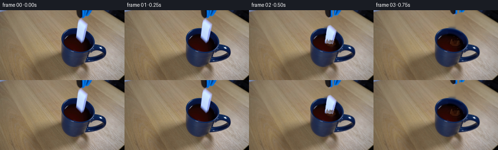
展开代码变化
--- 上一保存版本
+++ 本次保存版本
@@ -26,8 +26,8 @@
mask=np.maximum(dm,tm)
bg=cv2.inpaint(image,mask*255,5,cv2.INPAINT_TELEA).astype(np.float32)
theta=.25;c=np.cos(theta);s=np.sin(theta)
- u=(xx-160.2)*c+(yy-62.1)*s;v=-(xx-160.2)*s+(yy-62.1)*c
- r=np.sqrt((u/34.5)**2+(v/24.7)**2)
+ u=(xx-159.5)*c+(yy-62.58)*s;v=-(xx-159.5)*s+(yy-62.58)*c
+ r=np.sqrt((u/34.28)**2+(v/24.75)**2)
ul=(xx-159.7)*c+(yy-69.1)*s;vl=-(xx-159.7)*s+(yy-69.1)*c
rl=np.sqrt((ul/28.6)**2+(vl/16.9)**2)
liquid=(rl<.98)&(mask==0)&(image[:,:,0]<65)&(image[:,:,2]<25)
@@ -39,12 +39,14 @@
f=np.stack([np.ones_like(xx),r,r*r,r**3,u/34.5,(u/34.5)**2,u*r/34.5],-1)
co=np.linalg.lstsq(f[known],image[known].astype(float),rcond=None)[0]
wc=f@co
+ lip=np.exp(-((r-1.012)/.025)**2)*.35
+ wc=wc*(1-lip[:,:,None])+np.array([61,94,135])*lip[:,:,None]
blend=np.clip((rl-.99)/.06,0,1)[...,None]
col=lc*(1-blend)+wc*blend
noise=np.random.default_rng(31).normal(0,.28,(H,W,1))
col+=noise
- inside=(mask>0)&(yy>=35)&(r<1.032)
- a=np.clip((1.034-r)/.038,0,1)[...,None]
+ inside=(mask>0)&(yy>=34)&(r<1.075)
+ a=np.clip((1.063-r)/.056,0,1)[...,None]
bg[inside]=bg[inside]*(1-a[inside])+col[inside]*a[inside]
# Smooth only the repaired part, leaving untouched original geometry.
sm=gaussian_filter(bg,(.6,.6,0))
@@ -57,6 +59,9 @@
a=np.clip((image[:,:,2].astype(float)-bg[:,:,2]) / np.maximum(235-bg[:,:,2],35),0,1)
a*=region
a[a<.03]=0
+ a*=((image[:,:,2]>135)&(image[:,:,0]>90)).astype(float)
+ # Exclude a few pixels of the gripping pad from the ceramic matte.
+ a*=np.clip((np.mgrid[:H,:W][0]-16.7)/2.7,0,1)
else:
# Fine soft focus outline, including the dark gripping pads.
points=[(156,-4),(193,-4),(188,3),(185,7),(181,11.7),(177,13.3),(174,12.5),(172.3,15.1),(168,17.5),(163,17.3),(160,15.6),(158,12.9),(157,8)]
@@ -163,7 +168,7 @@
if k==2:
displacement=12.5;angle=-2.0
elif k==3:
- displacement=45;angle=-5.0
+ displacement=53;angle=-5.0
else: displacement=90;angle=-7
if k<4:
col,a=transform(domino,da,-.7,displacement,angle)
候选 03播放与检查图
点击播放 · 原生 RGB 像素
展开代码变化
--- 上一保存版本
+++ 本次保存版本
@@ -48,6 +48,16 @@
inside=(mask>0)&(yy>=34)&(r<1.075)
a=np.clip((1.063-r)/.056,0,1)[...,None]
bg[inside]=bg[inside]*(1-a[inside])+col[inside]*a[inside]
+ # Separate wood restoration from the ceramic repair so the navy lip does
+ # not bleed into the table above it.
+ large_mask=mask.copy()
+ large_mask[((xx-166)/48)**2+((yy-72)/45)**2<1.2]=1
+ wood=cv2.inpaint(image,large_mask*255,5,cv2.INPAINT_TELEA).astype(np.float32)
+ outside=(mask>0)&(yy<48)
+ mugcoverage=np.clip((1.063-r)/.056,0,1)
+ use=(1-mugcoverage)*outside
+ use=np.clip(use,0,1)
+ bg=bg*(1-use[:,:,None])+wood*use[:,:,None]
# Smooth only the repaired part, leaving untouched original geometry.
sm=gaussian_filter(bg,(.6,.6,0))
seam=(mask>0)&(yy>=35)
候选 04播放与检查图
点击播放 · 原生 RGB 像素
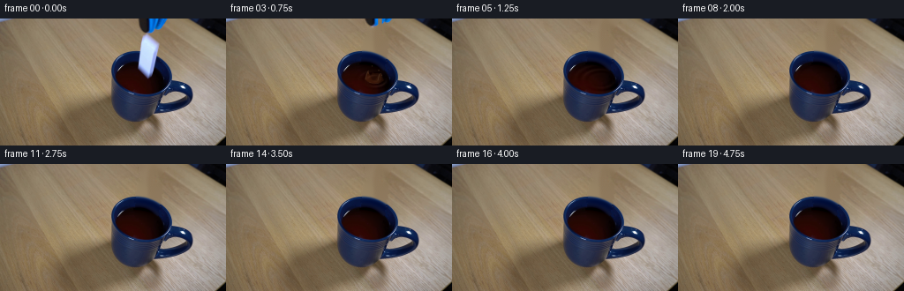
展开代码变化
--- 上一保存版本
+++ 本次保存版本
@@ -104,7 +104,7 @@
dist=np.sqrt(x*x+y*y+.1)
a=t-.38
if a<0:return bg.copy(),clip
- amp=1.7*np.exp(-a/1.03)*(1-np.exp(-a*20))
+ amp=2.35*np.exp(-a/1.4)*(1-np.exp(-a*20))
phase=.69*dist-16*a
envelope=np.exp(-((dist-25*a)/15)**2)
z=amp*np.sin(phase)*envelope
@@ -119,8 +119,8 @@
mapy=(yy+.5)*S-.5+ny*S*.3
refr=cv2.remap(big,mapx.astype(np.float32),mapy.astype(np.float32),cv2.INTER_CUBIC)
lighting=np.clip(-.6*nx-ny, -2,2)
- shine=np.maximum(lighting-.1,0)**2*8*np.exp(-a*.8)
- darkness=np.minimum(lighting,0)*5
+ shine=np.maximum(lighting-.1,0)**2*12*np.exp(-a*.6)
+ darkness=np.minimum(lighting,0)*6
delta=shine[:,:,None]*np.array([1,.78,.60])+darkness[:,:,None]*np.array([.8,.67,.48])
rip=refr+delta
big=big*(1-clip[:,:,None])+rip*clip[:,:,None]
@@ -132,7 +132,9 @@
rr=np.sqrt((xx-bx)**2+((yy-by)/.7)**2)
b=np.exp(-((rr-br)/.25)**2)*bubble*.32*clip
big=big*(1-b[:,:,None])+np.array([123,100,78])*b[:,:,None]
- return cv2.resize(np.clip(big,0,255),(W,H),interpolation=cv2.INTER_AREA),clip
+ out=cv2.resize(np.clip(big,0,255),(W,H),interpolation=cv2.INTER_AREA)
+ mask=cv2.resize(clip,(W,H),interpolation=cv2.INTER_AREA)
+ return bg*(1-mask[:,:,None])+out*mask[:,:,None],clip
def draw_splash(frame,t):
age=t-.41
@@ -159,9 +161,9 @@
lay=np.asarray(layer,dtype=np.float32)
lay=gaussian_filter(lay,(1.05,1.05,0))
a=lay[:,:,3:4]/255
- big=cv2.resize(frame,(W*S,H*S),interpolation=cv2.INTER_CUBIC)
- big=big*(1-a)+lay[:,:,:3]*a
- return cv2.resize(big,(W,H),interpolation=cv2.INTER_AREA)
+ small_a=cv2.resize(a,(W,H),interpolation=cv2.INTER_AREA)[:,:,None]
+ premult=cv2.resize(lay[:,:,:3]*a,(W,H),interpolation=cv2.INTER_AREA)
+ return frame*(1-small_a)+premult
def main():
original=np.asarray(Image.open(ROOT/'first_frame.png').convert('RGB'))
可观测工具轨迹
实际执行的命令与返回图片。
命令 1exit 0
/bin/bash -lc "cat prompt.txt && printf '\\n---RULES---\\n' && cat GENERATION_RULES.md && printf '\\n---FILES---\\n' && ls -la"
命令 2exit 0
/bin/bash -lc "cat artifact_io.py && python - <<'PY'
from PIL import Image
im=Image.open('first_frame.png'); print(im.size); im.resize((1024,576)).save('.tmp/large.png')
PY"命令 3exit 0
/bin/bash -lc "python - <<'PY'
import importlib.util
for x in ['cv2','numpy','scipy','PIL']:
print(x,importlib.util.find_spec(x))
from PIL import Image
im=Image.open('first_frame.png'); im.crop((120,0,200,95)).resize((640,760)).save('.tmp/crop.png')
PY"命令 4exit 0
/bin/bash -lc "python - <<'PY'
from PIL import Image
im=Image.open('first_frame.png'); im.crop((120,32,199,94)).resize((790,620)).save('.tmp/mug.png')
PY"命令 5exit 1
/bin/bash -lc "cat > .tmp/testplate.py <<'PY'
import cv2,numpy as np
from PIL import Image,ImageDraw
im=np.array(Image.open('first_frame.png'))
h,w=im.shape[:2]; Y,X=np.mgrid[:h,:w].astype(np.float32)
# tool
mtool=((X>=154)&(X<=192)&(Y<23)&((im[:,:,2]>im[:,:,0]*1.3)|(im.mean(axis=2)<65))).astype(np.uint8)*255
mtool=cv2.dilate(mtool,np.ones((3,3),np.uint8))
# domino silhouette
m=Image.new('L',(w*4,h*4));d=ImageDraw.Draw(m)
p=[(164,17),(168,18),(181,27),(175,63),(170,69),(155,56),(158,28),(160,22)]
d.polygon([(x*4,y*4) for x,y in p],fill=255)
md=np.array(m.resize((w,h),Image.Resampling.LANCZOS)); mask=np.maximum(md,mtool)
bg=cv2.inpaint(im,(mask>5).astype(np.uint8)*255,4,cv2.INPAINT_TELEA)
# reflect ring across approximate tilted minor axis, unrotate image around 160,62
ang=.18;c=np.cos(ang);s=np.sin(ang)
u=(X-160)*c+(Y-62)*s;v=-(X-160)*s+(Y-62)*c
mx=160-u*c-v*s;my=62-u*s+v*c
mir=cv2.remap(im,mx,my,cv2.INTER_CUBIC)
inside=(Y>=37)&(Y<=69)&(md>1)
bg[inside]=mir[inside]
Image.fromarray(bg).save('.tmp/clean.png')
Image.fromarray(bg).resize((1024,576)).save('.tmp/cleanlarge.png')
Image.fromarray(mask).save('.tmp/mask.png')
PY
python .tmp/testplate.py"命令 6exit 0
/bin/bash -lc "sed -i 's/cv2.remap(im,mx,my/cv2.remap(im,mx.astype(np.float32),my.astype(np.float32)/' .tmp/testplate.py; python .tmp/testplate.py"
命令 7exit 0
/bin/bash -lc "sed '/bg\\[inside\\]/d' .tmp/testplate.py > .tmp/testplate2.py; python .tmp/testplate2.py"
命令 8exit 0
/bin/bash -lc "cat > .tmp/plate.py <<'PY'
exec(open('.tmp/testplate2.py').read().split('bg=cv2.inpaint')[0])
md=cv2.dilate((md>5).astype(np.uint8)*255,np.ones((3,3),np.uint8))
mask=np.maximum(md,mtool)
bg=cv2.inpaint(im,mask,5,cv2.INPAINT_TELEA).astype(float)
# outer rim tilted ellipse
ang=.25;c=np.cos(ang);s=np.sin(ang)
u=(X-160.2)*c+(Y-62.1)*s;v=-(X-160.2)*s+(Y-62.1)*c
r=np.sqrt((u/34.5)**2+(v/24.7)**2)
# liquid ellipse
ul=(X-159.7)*c+(Y-69.1)*s;vl=-(X-159.7)*s+(Y-69.1)*c
rl=np.sqrt((ul/28.6)**2+(vl/16.9)**2)
liquid=(rl<.98)&(mask==0)&(im[:,:,0]<65)&(im[:,:,2]<25)
xx=(X-160)/30;yy=(Y-66)/25
feat=np.stack([np.ones_like(X),xx,yy,xx*xx,xx*yy,yy*yy,xx**3,xx**2*yy,xx*yy**2,yy**3],-1)
coef=np.linalg.lstsq(feat[liquid],im[liquid].astype(float),rcond=None)[0]
lc=feat@coef
# wall infer radial colors from clean backwall, interpolation smooth
known=(r<1.035)&(rl>1.04)&(v<0)&(mask==0)&(im[:,:,2]>im[:,:,0]*1.5)
# regression radial and side angle, accounting highlight at lip
rr=r; aa=u/34.5
f=np.stack([np.ones_like(X),rr,rr**2,rr**3,aa,aa**2,aa*rr],-1)
co=np.linalg.lstsq(f[known],im[known].astype(float),rcond=None)[0]
wc=f@co
rng=np.random.default_rng(31);noise=rng.normal(0,.35,(h,w,1))
cover=(mask>0)&(Y>=35)
# blend across liquid boundary to natural soft focus
blend=np.clip((rl-0.99)/.06,0,1)[...,None]
color=lc*(1-blend)+wc*blend+noise
inside=cover&(r<1.025)
# edge feather with table
outer=np.clip((1.032-r)/.035,0,1)[...,None]
bg[inside]=bg[inside]*(1-outer[inside])+color[inside]*outer[inside]
bg=np.clip(bg,0,255).astype(np.uint8)
Image.fromarray(bg).save('.tmp/clean.png');Image.fromarray(bg).resize((1024,576)).save('.tmp/cleanlarge.png')
PY
python .tmp/plate.py"命令 9exit 0
/bin/bash -lc "python - <<'PY'
from PIL import Image,ImageDraw
im=Image.open('first_frame.png').resize((1024,576));d=ImageDraw.Draw(im)
for x in range(120,201,5):
d.line((x*4,0,x*4,300), fill=(255,80,0),width=1);d.text((x*4+1,0),str(x),fill='yellow')
for y in range(5,76,5):
d.line((480,y*4,800,y*4),fill=(255,80,0),width=1);d.text((480,y*4),str(y),fill='yellow')
im.crop((600,0,780,300)).resize((540,900)).save('.tmp/grid.png')
PY"命令 10exit 0
/bin/bash -lc "python - <<'PY'
from PIL import Image
Image.open('first_frame.png').crop((150,0,196,25)).resize((736,400)).save('.tmp/tool.png')
PY"命令 11exit 0
/bin/bash -lc "cat > generate.py <<'PY'
from pathlib import Path
import numpy as np
import cv2
from PIL import Image, ImageDraw
from scipy.ndimage import gaussian_filter
import artifact_io
ROOT = Path(__file__).resolve().parent
W,H=256,144
S=4
def polygon_mask(points, blur=0):
a=Image.new('L',(W*S,H*S))
ImageDraw.Draw(a).polygon([(round(x*S),round(y*S)) for x,y in points],fill=255)
a=np.asarray(a.resize((W,H),Image.Resampling.LANCZOS),np.float32)/255
if blur: a=gaussian_filter(a,blur)
return a
def clean_plate(image):
yy,xx=np.mgrid[:H,:W].astype(np.float32)
dp=[(164,16),(169,18),(182,27),(176,64),(170,70),(154,57),(157,28),(160,21)]
dm=polygon_mask(dp)
dm=cv2.dilate((dm>.015).astype(np.uint8),np.ones((3,3),np.uint8))
tm=((xx>=154)&(xx<=192)&(yy<21)&((image[:,:,2]>image[:,:,0]*1.3)|(image.mean(2)<65))).astype(np.uint8)
tm=cv2.dilate(tm,np.ones((3,3),np.uint8))
mask=np.maximum(dm,tm)
bg=cv2.inpaint(image,mask*255,5,cv2.INPAINT_TELEA).astype(np.float32)
theta=.25;c=np.cos(theta);s=np.sin(theta)
u=(xx-160.2)*c+(yy-62.1)*s;v=-(xx-160.2)*s+(yy-62.1)*c
r=np.sqrt((u/34.5)**2+(v/24.7)**2)
ul=(xx-159.7)*c+(yy-69.1)*s;vl=-(xx-159.7)*s+(yy-69.1)*c
rl=np.sqrt((ul/28.6)**2+(vl/16.9)**2)
liquid=(rl<.98)&(mask==0)&(image[:,:,0]<65)&(image[:,:,2]<25)
x=(xx-160)/30;y=(yy-66)/25
feat=np.stack([np.ones_like(xx),x,y,x*x,x*y,y*y,x**3,x**2*y,x*y**2,y**3],-1)
coef=np.linalg.lstsq(feat[liquid],image[liquid].astype(float),rcond=None)[0]
lc=feat@coef
known=(r<1.035)&(rl>1.04)&(v<0)&(mask==0)&(image[:,:,2]>image[:,:,0]*1.5)
f=np.stack([np.ones_like(xx),r,r*r,r**3,u/34.5,(u/34.5)**2,u*r/34.5],-1)
co=np.linalg.lstsq(f[known],image[known].astype(float),rcond=None)[0]
wc=f@co
blend=np.clip((rl-.99)/.06,0,1)[...,None]
col=lc*(1-blend)+wc*blend
noise=np.random.default_rng(31).normal(0,.28,(H,W,1))
col+=noise
inside=(mask>0)&(yy>=35)&(r<1.032)
a=np.clip((1.034-r)/.038,0,1)[...,None]
bg[inside]=bg[inside]*(1-a[inside])+col[inside]*a[inside]
# Smooth only the repaired part, leaving untouched original geometry.
sm=gaussian_filter(bg,(.6,.6,0))
seam=(mask>0)&(yy>=35)
bg[seam]=sm[seam]
return np.clip(bg,0,255).astype(np.float32),dm,tm
def extract(image,bg,region,kind):
if kind=='white':
a=np.clip((image[:,:,2].astype(float)-bg[:,:,2]) / np.maximum(235-bg[:,:,2],35),0,1)
a*=region
a[a<.03]=0
else:
# Fine soft focus outline, including the dark gripping pads.
points=[(156,-4),(193,-4),(188,3),(185,7),(181,11.7),(177,13.3),(174,12.5),(172.3,15.1),(168,17.5),(163,17.3),(160,15.6),(158,12.9),(157,8)]
a=polygon_mask(points,.45)
col=np.divide(image.astype(float)-bg*(1-a[:,:,None]),np.maximum(a[:,:,None],.015))
col=np.clip(col,0,255)
return col*a[:,:,None],a
def transform(rgb,alpha,dx,dy,angle=0,center=(168,43)):
mat=cv2.getRotationMatrix2D(center,angle,1)
mat[:,2]+=np.array([dx,dy])
col=cv2.warpAffine(rgb.astype(np.float32),mat,(W,H),flags=cv2.INTER_CUBIC,borderMode=cv2.BORDER_CONSTANT)
a=cv2.warpAffine(alpha.astype(np.float32),mat,(W,H),flags=cv2.INTER_CUBIC,borderMode=cv2.BORDER_CONSTANT)
return col,np.clip(a,0,1)
def overlay(bg,col,a):
return bg*(1-a[:,:,None])+col
# All liquid movement is an analytic, damped capillary/gravity disturbance.
def water(bg,t):
yy,xx=np.mgrid[:H*S,:W*S].astype(np.float32)
xx=(xx+.5)/S-.5;yy=(yy+.5)/S-.5
theta=.25;c=np.cos(theta);s=np.sin(theta)
ul=(xx-159.7)*c+(yy-69.1)*s
vl=-(xx-159.7)*s+(yy-69.1)*c
ellipse=(ul/28.6)**2+(vl/16.9)**2
clip=np.clip((1.015-ellipse)*28,0,1)
# Center of impact, cylindrical water-plane distance corrected for projection.
x=xx-168.;y=(yy-69.)/.58
dist=np.sqrt(x*x+y*y+.1)
a=t-.38
if a<0:return bg.copy(),clip
amp=1.7*np.exp(-a/1.03)*(1-np.exp(-a*20))
phase=.69*dist-16*a
envelope=np.exp(-((dist-25*a)/15)**2)
z=amp*np.sin(phase)*envelope
z+=.45*amp*np.sin(.48*dist-11*a)*np.exp(-dist/48)
# Small secondary ripples returned from the ceramic walls.
z+=.22*amp*np.sin(.7*(52-dist)-15*a)*np.exp(-((52-dist-25*a)/18)**2)
nx=np.gradient(z,axis=1)*S
ny=np.gradient(z,axis=0)*S*.58
big=cv2.resize(bg,(W*S,H*S),interpolation=cv2.INTER_CUBIC)
# Shifts of reflected environmental light on the rippling dark surface.
mapx=(xx+.5)*S-.5+nx*S*.26
mapy=(yy+.5)*S-.5+ny*S*.3
refr=cv2.remap(big,mapx.astype(np.float32),mapy.astype(np.float32),cv2.INTER_CUBIC)
lighting=np.clip(-.6*nx-ny, -2,2)
shine=np.maximum(lighting-.1,0)**2*8*np.exp(-a*.8)
darkness=np.minimum(lighting,0)*5
delta=shine[:,:,None]*np.array([1,.78,.60])+darkness[:,:,None]*np.array([.8,.67,.48])
rip=refr+delta
big=big*(1-clip[:,:,None])+rip*clip[:,:,None]
# Short lived bubbling at the insertion point, with no persistent foam.
bubble=np.exp(-a*3.8)
if a<1.4:
for j,(bx,by,br) in enumerate([(162,72,1.1),(171,74,1.25),(176,69,.8),(164,66,.7)]):
bx+=(j-1.5)*a*2;by+=a*1.0
rr=np.sqrt((xx-bx)**2+((yy-by)/.7)**2)
b=np.exp(-((rr-br)/.25)**2)*bubble*.32*clip
big=big*(1-b[:,:,None])+np.array([123,100,78])*b[:,:,None]
return cv2.resize(np.clip(big,0,255),(W,H),interpolation=cv2.INTER_AREA),clip
def draw_splash(frame,t):
age=t-.41
if age<0 or age>.65:return frame
# A low asymmetric crown and a couple of airborne droplets.
strength=np.exp(-((age-.21)/.21)**2)
layer=Image.new('RGBA',(W*S,H*S),(0,0,0,0));d=ImageDraw.Draw(layer)
def poly(p,col):d.polygon([(int(x*S),int(y*S)) for x,y in p],fill=col)
top=69-12*strength
# Far side of the crown is a translucent amber sheen.
poly([(157.2,69),(158,66-4*strength),(161,66-8*strength),(164,68-5*strength),(166,top),(168,67-7*strength),(172,65-5*strength),(176,67-4*strength),(179,70),(175,73),(168,74),(160,72)],(57,25,9,int(170*strength)))
poly([(158,69),(160,64-5*strength),(161.5,63-6*strength),(162,66-3*strength),(166,70),(169,70),(174,65-4*strength),(176,64-3*strength),(176,69),(173,74),(163,73)],(83,40,14,int(175*strength)))
# Thin specular contours, not opaque white foam.
for pts,alpha in [([(158,69),(160,64-5*strength),(161.5,63-6*strength)],125), ([(172,70),(174,65-4*strength),(176,64-3*strength)],115), ([(162,72),(167,74),(172,73)],90)]:
d.line([(int(x*S),int(y*S)) for x,y in pts],fill=(194,164,118,int(alpha*strength)),width=2)
# Ballistic droplets travel only briefly and remain close to the cup.
for j,(vx,vy,r) in enumerate([(-20,-54,.63),(15,-64,.68),(25,-48,.48),(-7,-78,.50)]):
tt=age
px=168+vx*tt;py=69+vy*tt+100*tt*tt
if py<72:
ry=r*(1+abs(vy+200*tt)*.013)
d.ellipse(((px-r)*S,(py-ry)*S,(px+r)*S,(py+ry)*S),fill=(63,32,14,220))
d.ellipse(((px-r*.6)*S,(py-ry*.65)*S,px*S,(py-ry*.2)*S),fill=(182,161,127,155))
lay=np.asarray(layer,dtype=np.float32)
lay=gaussian_filter(lay,(1.05,1.05,0))
a=lay[:,:,3:4]/255
big=cv2.resize(frame,(W*S,H*S),interpolation=cv2.INTER_CUBIC)
big=big*(1-a)+lay[:,:,:3]*a
return cv2.resize(big,(W,H),interpolation=cv2.INTER_AREA)
def main():
original=np.asarray(Image.open(ROOT/'first_frame.png').convert('RGB'))
base,dm,tm=clean_plate(original)
domino,da=extract(original,base,dm,'white')
tool,ta=extract(original,base,tm,'tool')
yy,xx=np.mgrid[:H,:W].astype(float)
frames=[]
for k in range(20):
if k<=1:
frames.append(original.copy());continue
t=k/4
frame,waterclip=water(base,t)
if k==2:
displacement=12.5;angle=-2.0
elif k==3:
displacement=45;angle=-5.0
else: displacement=90;angle=-7
if k<4:
col,a=transform(domino,da,-.7,displacement,angle)
# The dark liquid hides the lower part of the opaque sinking ceramic.
surface=69.5+.12*(xx-168)
meniscus=.45*np.sin((xx-159)*.8-7*t)
visible=np.clip((surface+meniscus-yy+.35)/1.25,0,1)
a*=visible;col*=visible[:,:,None]
frame=overlay(frame,col,a)
# A subtle reflection of the bright domino on the nearby rippled liquid.
if k==2:
refl=np.exp(-((xx-170)/4.5)**2-((yy-75)/2.5)**2)*.13
frame=frame*(1-refl[:,:,None])+np.array([104,80,57])*refl[:,:,None]
frame=draw_splash(frame,t)
if k<=4:
dy={2:-1.5,3:-8,4:-18}[k]
dx={2:0,3:1.5,4:3}[k]
# The blue jaws open slightly as the grabber is lifted out of shot.
left=(xx<173).astype(float)
right=1-left
separation={2:1.,3:2.2,4:3}[k]
for part,shift in [(right,separation),(left,-separation)]:
col,a=transform(tool*part[:,:,None],ta*part,dx+shift,dy,0,center=(169,8))
frame=overlay(frame,col,a)
frames.append(np.clip(np.rint(frame),0,255).astype(np.uint8))
frames=np.stack(frames)
assert np.array_equal(frames[0],original)
artifact_io.save(frames,ROOT)
Image.fromarray(np.clip(base,0,255).astype(np.uint8)).save(ROOT/'.tmp/clean_plate.png')
contact=Image.new('RGB',(W*5,H*2))
for j,k in enumerate(range(10)):
contact.paste(Image.fromarray(frames[k]),((j%5)*W,(j//5)*H))
contact.save(ROOT/'.tmp/first_ten.png')
if __name__=='__main__':main()
PY
python generate.py"命令 12exit 0
/bin/bash -lc "python - <<'PY'
from PIL import Image
for k in [2,3,4,6]:
im=Image.open(f'frames/{k:02d}.png');im.resize((1024,576)).save(f'.tmp/frame{k}.png')
PY"命令 13exit 0
/bin/bash -lc "python - <<'PY'
import generate, numpy as np
from PIL import Image
im=np.array(Image.open('first_frame.png'));bg,dm,tm=generate.clean_plate(im)
for p in [(160,35),(160,36),(160,37),(160,38),(170,38),(170,39),(170,40),(176,41),(165,20),(170,24)]:
x,y=p;print(p,im[y,x],bg[y,x])
PY"命令 14exit 0
/bin/bash -lc "python - <<'PY'
from PIL import Image,ImageDraw
im=Image.open('first_frame.png').resize((1536,864));d=ImageDraw.Draw(im)
for x in range(125,201,5):
d.line((x*6,180,x*6,560), fill=(255,80,0),width=1);d.text((x*6+1,180),str(x),fill='yellow')
for y in range(35,91,5):
d.line((750,y*6,1200,y*6),fill=(255,80,0),width=1);d.text((750,y*6),str(y),fill='yellow')
im.crop((750,180,1200,565)).save('.tmp/muggrid.png')
PY"命令 15exit 0
/bin/bash -lc "python - <<'PY' import numpy as np from scipy.optimize import least_squares pts=np.array([(126.5,57),(130.5,46.8),(138,40.8),(146,37.7),(155,37.1),(183,47.5),(189.5,55),(193.5,66),(191,76),(185,82.4),(176,86),(164,87.5),(151,85.5),(138,80.5),(130,72)]) def fun(p): x,y,a,b,t=p;c=np.cos(t);s=np.sin(t);u=(pts[:,0]-x)*c+(pts[:,1]-y)*s;v=-(pts[:,0]-x)*s+(pts[:,1]-y)*c return (u/a)**2+(v/b)**2-1 r=least_squares(fun,[160,62,35,24,.3]); print(r.x,fun(r.x)) PY"
命令 16exit 0
/bin/bash -lc "python - <<'PY'
p='generate.py'
s=open(p).read().replace(\"(xx-160.2)*c+(yy-62.1)*s;v=-(xx-160.2)*s+(yy-62.1)*c\",\"(xx-159.5)*c+(yy-62.58)*s;v=-(xx-159.5)*s+(yy-62.58)*c\").replace('(u/34.5)**2+(v/24.7)**2','(u/34.28)**2+(v/24.75)**2')
s=s.replace(\"inside=(mask>0)&(yy>=35)&(r<1.032)\",\"inside=(mask>0)&(yy>=34)&(r<1.075)\")
s=s.replace(\"a=np.clip((1.034-r)/.038,0,1)[...,None]\", \"a=np.clip((1.063-r)/.056,0,1)[...,None]\")
s=s.replace(\"wc=f@co\", \"wc=f@co\\n lip=np.exp(-((r-1.012)/.025)**2)*.35\\n wc=wc*(1-lip[:,:,None])+np.array([61,94,135])*lip[:,:,None]\")
s=s.replace(\"a[a<.03]=0\", \"a[a<.03]=0\\n a*=((image[:,:,2]>135)&(image[:,:,0]>90)).astype(float)\\n # Exclude a few pixels of the gripping pad from the ceramic matte.\\n a*=np.clip((np.mgrid[:H,:W][0]-16.7)/2.7,0,1)\")
s=s.replace('elif k==3:\\n displacement=45;', 'elif k==3:\\n displacement=53;')
open(p,'w').write(s)
PY
python generate.py
python - <<'PY'
from PIL import Image
Image.open('.tmp/clean_plate.png').resize((1024,576)).save('.tmp/clean2large.png')
Image.open('frames/03.png').resize((1024,576)).save('.tmp/frame3.png')
PY"命令 17exit 0
/bin/bash -lc "python - <<'PY'
p='generate.py';s=open(p).read()
s=s.replace(' # Smooth only the repaired part', ''' # Separate wood restoration from the ceramic repair so the navy lip does
# not bleed into the table above it.
large_mask=mask.copy()
large_mask[((xx-166)/48)**2+((yy-72)/45)**2<1.2]=1
wood=cv2.inpaint(image,large_mask*255,5,cv2.INPAINT_TELEA).astype(np.float32)
outside=(mask>0)&(yy<48)
mugcoverage=np.clip((1.063-r)/.056,0,1)
use=(1-mugcoverage)*outside
use=np.clip(use,0,1)
bg=bg*(1-use[:,:,None])+wood*use[:,:,None]
# Smooth only the repaired part''')
open(p,'w').write(s)
PY
python generate.py
python - <<'PY'
from PIL import Image
Image.open('.tmp/clean_plate.png').resize((1024,576)).save('.tmp/clean3large.png')
PY"命令 18exit 0
/bin/bash -lc "python - <<'PY'
from PIL import Image
for k in [2,4,5]:Image.open(f'frames/{k:02d}.png').resize((1024,576)).save(f'.tmp/frame{k}.png')
PY"命令 19exit 0
/bin/bash -lc "python - <<'PY'
p='generate.py';s=open(p).read().replace('amp=1.7*np.exp(-a/1.03)','amp=2.35*np.exp(-a/1.4)').replace('**2*8*np.exp(-a*.8)','**2*12*np.exp(-a*.6)').replace('lighting,0)*5','lighting,0)*6')
s=s.replace('return cv2.resize(np.clip(big,0,255),(W,H),interpolation=cv2.INTER_AREA),clip','''out=cv2.resize(np.clip(big,0,255),(W,H),interpolation=cv2.INTER_AREA)
mask=cv2.resize(clip,(W,H),interpolation=cv2.INTER_AREA)
return bg*(1-mask[:,:,None])+out*mask[:,:,None],clip''')
s=s.replace(''' big=cv2.resize(frame,(W*S,H*S),interpolation=cv2.INTER_CUBIC)
big=big*(1-a)+lay[:,:,:3]*a
return cv2.resize(big,(W,H),interpolation=cv2.INTER_AREA)''',''' small_a=cv2.resize(a,(W,H),interpolation=cv2.INTER_AREA)[:,:,None]
premult=cv2.resize(lay[:,:,:3]*a,(W,H),interpolation=cv2.INTER_AREA)
return frame*(1-small_a)+premult''')
open(p,'w').write(s)
PY
python generate.py
python - <<'PY'
import numpy as np
from PIL import Image
p=np.load('pixels.npz')['pixels'];print('Packed shape:',p.shape)
assert np.array_equal(np.asarray(Image.open('frames/00.png')),np.asarray(Image.open('first_frame.png')))
print('Frame zero exact; output complete')
PY"视觉工具实际返回图片 1
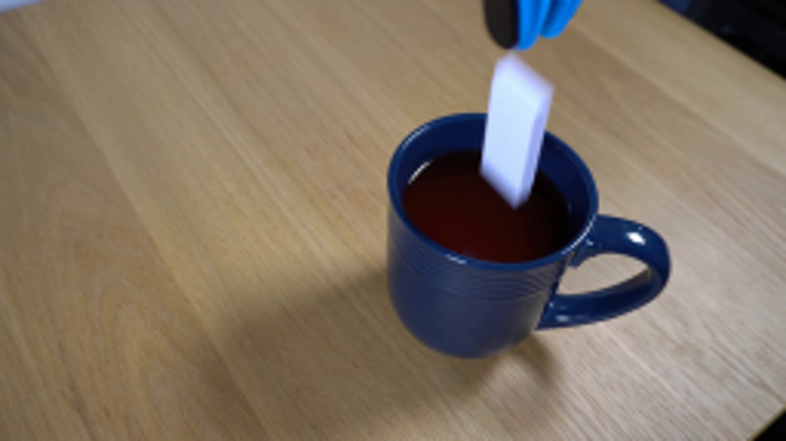
视觉工具实际返回图片 2
视觉工具实际返回图片 3
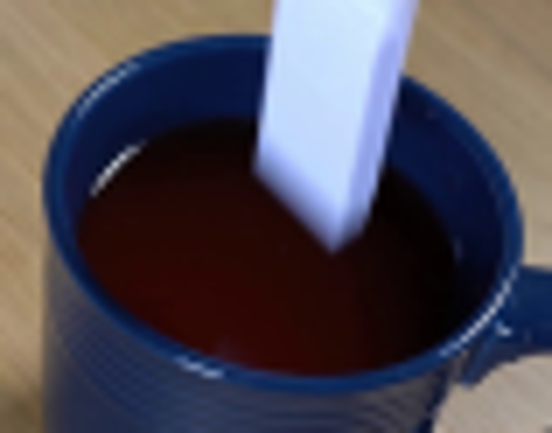
视觉工具实际返回图片 4
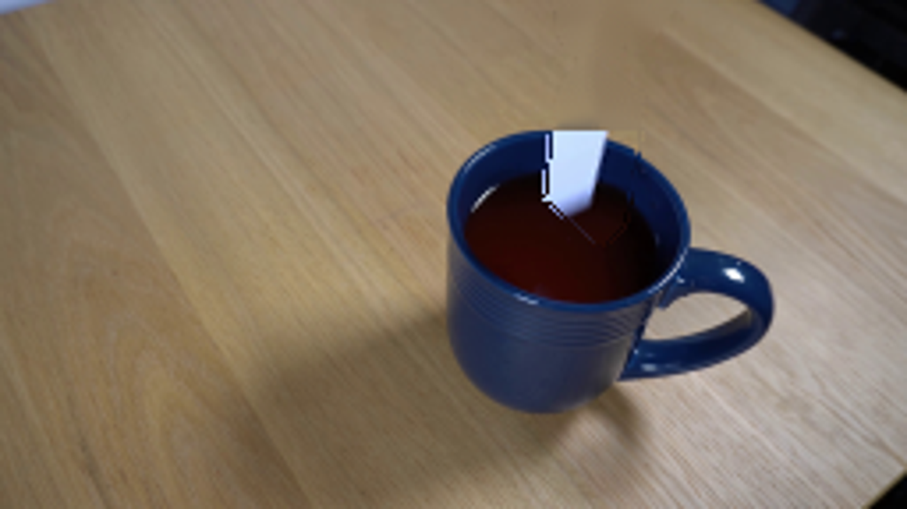
视觉工具实际返回图片 5
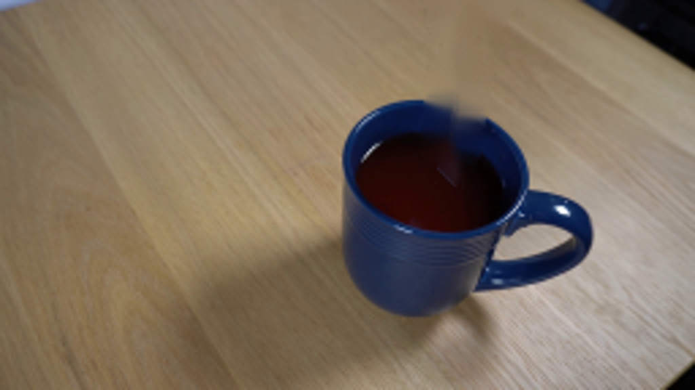
视觉工具实际返回图片 6
视觉工具实际返回图片 7
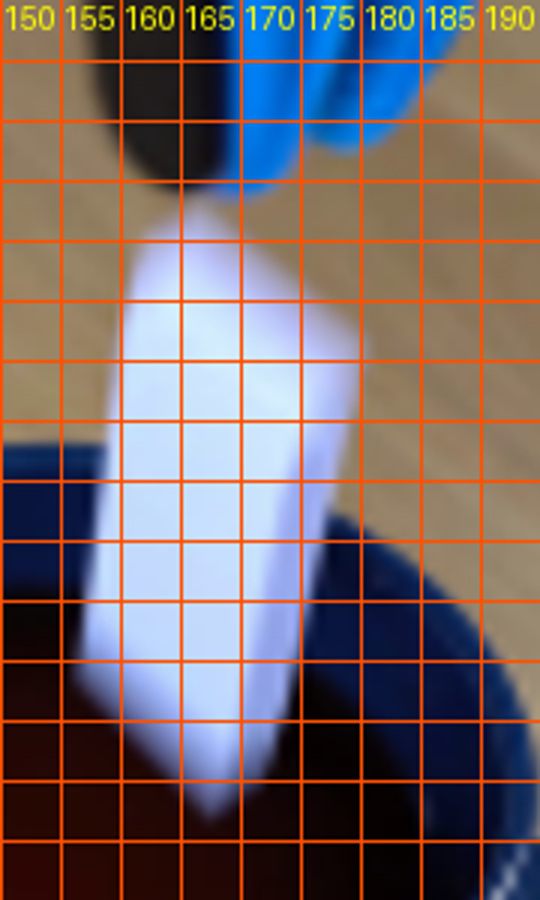
视觉工具实际返回图片 8
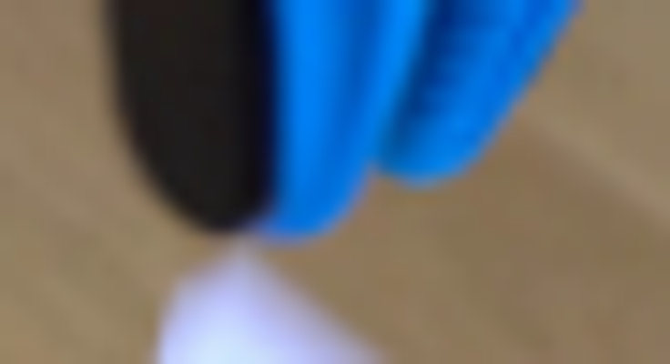
视觉工具实际返回图片 9
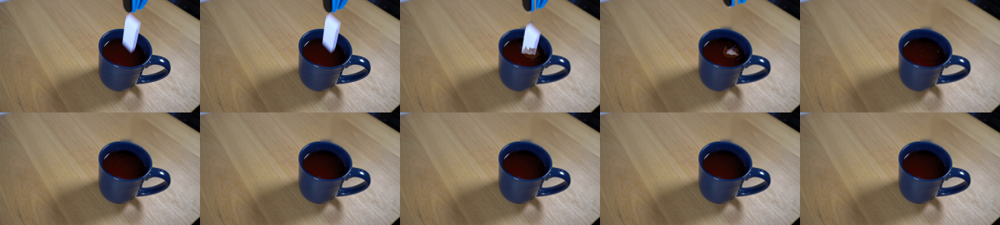
视觉工具实际返回图片 10
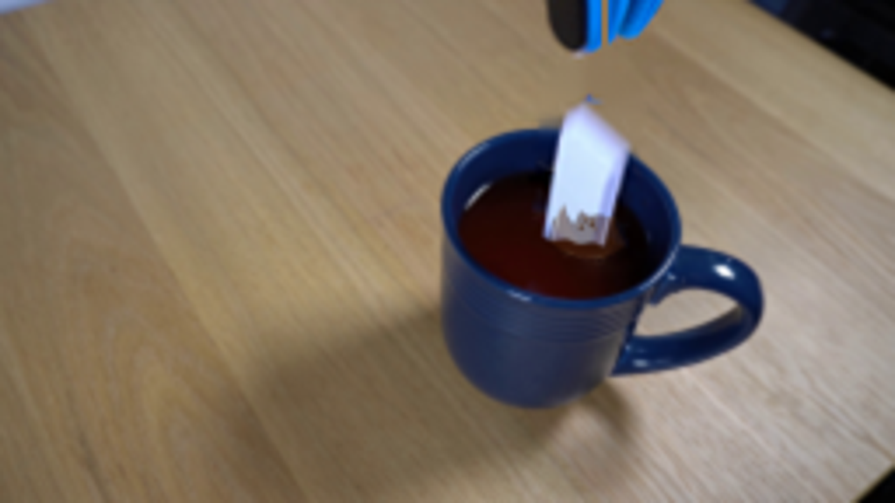
视觉工具实际返回图片 11
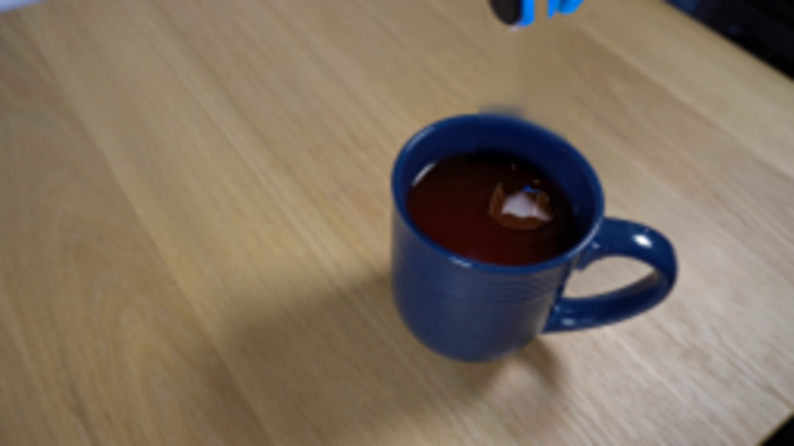
视觉工具实际返回图片 12
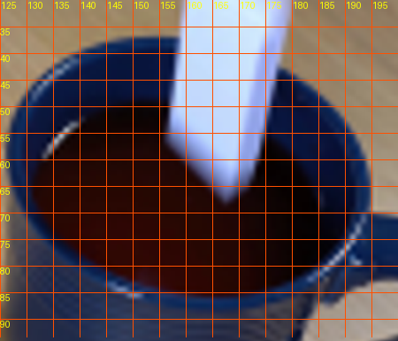
视觉工具实际返回图片 13
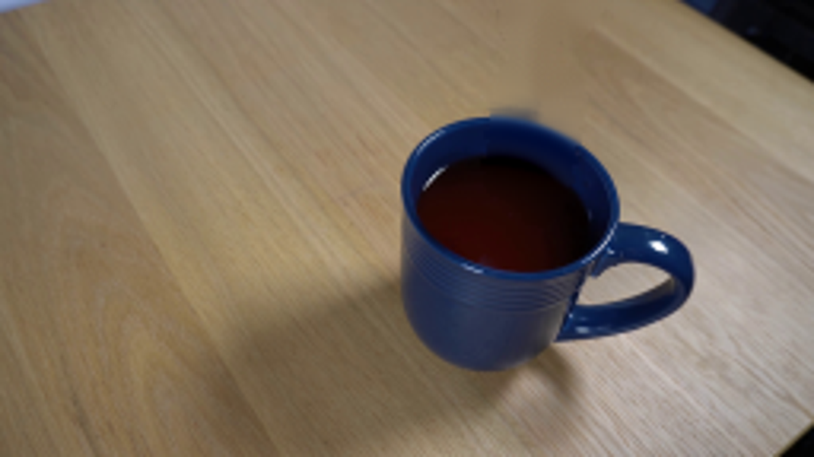
视觉工具实际返回图片 14
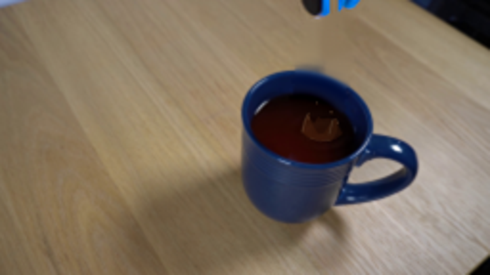
视觉工具实际返回图片 15
视觉工具实际返回图片 16
视觉工具实际返回图片 17
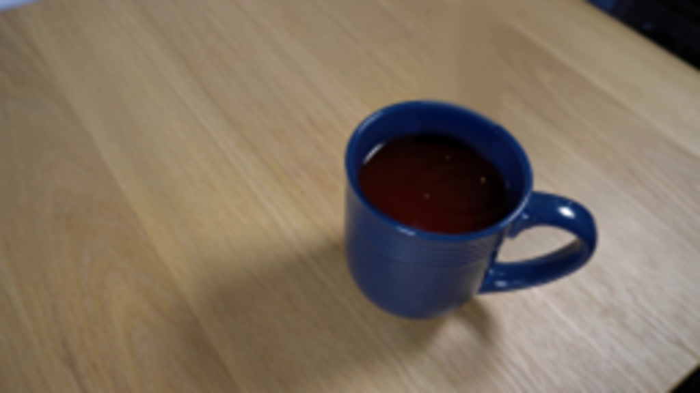
保存候选 4 份；完成命令 19 次；可验证图片返回 17 张。原始 API 响应与完整日志保留在本地。